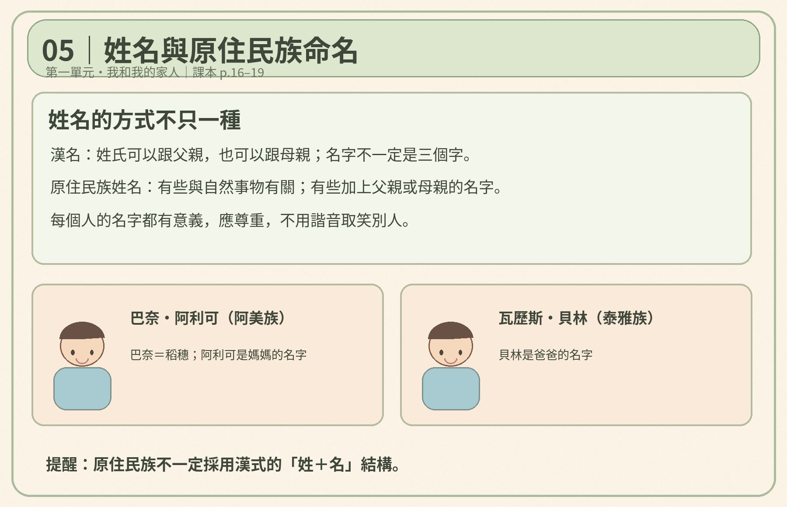
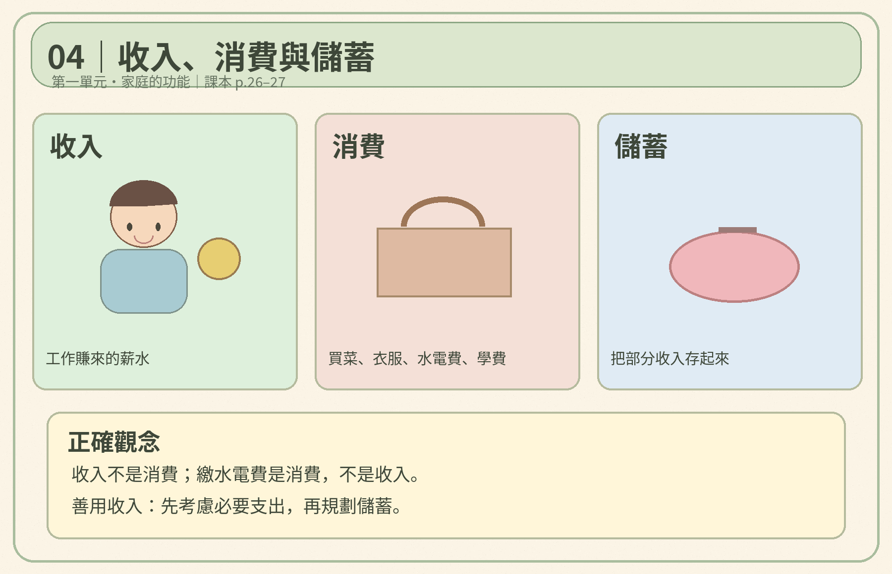
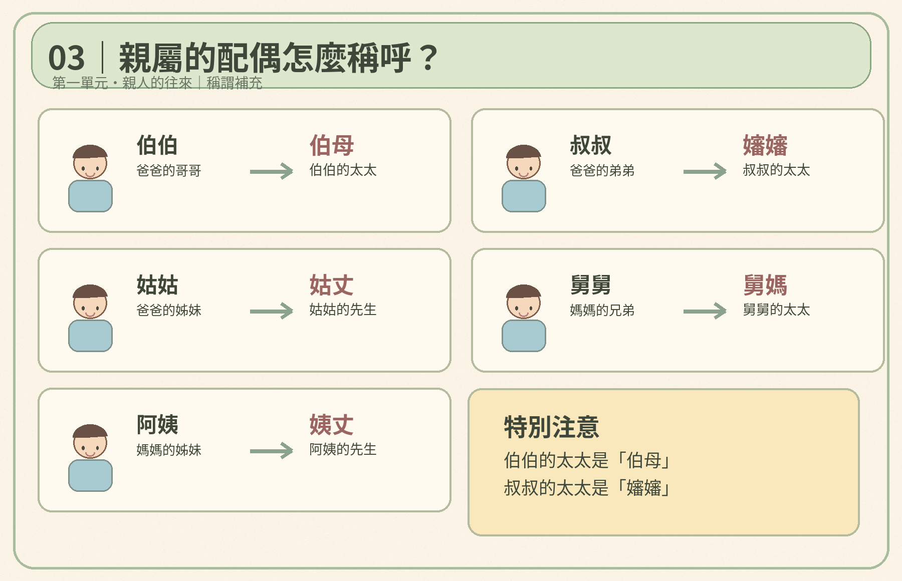
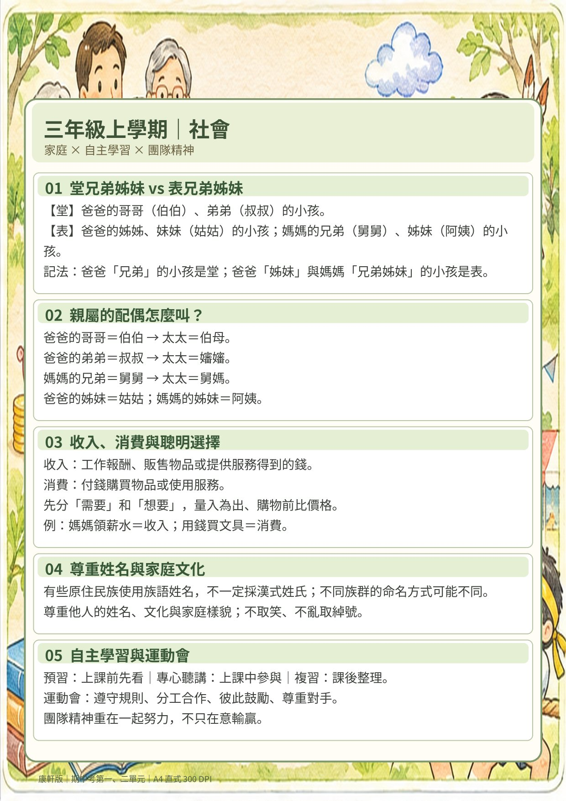

社會 重點整理
康軒 社會 三上。期中考只考第一單元 我的家庭、第二單元 學習與成長（課本 p.11–55），預設只顯示這兩個單元。第三到五單元留給下次段考，按「全冊」就看得到。
範圍：
黃色底＝老師上課畫的重點 ★＝之前寫錯過，要特別注意
第一單元 我的家庭
第一單元 第1課 我和我的家人（p.12–19）
家庭成員
- 每個家庭的成員不一定相同：有的有爸媽和兄弟姊妹，有的和祖父母住，有的只和爸爸或媽媽住（單親），有的被收養或住在育幼院（老師和院裡的哥哥姊姊就是家人）。
- 鄰居不是家庭成員。
每個家庭的成員不一定相同（課本 p.12–13）。只和爸爸或媽媽住叫做單親。
家庭成員的改變
- 原因：出生、死亡、結婚、離婚。新生兒出生 → 成員增加；家人過世 → 成員減少。
- 面對改變要學習接納和愛護家人，珍惜相處的時光。
- 難過時可以向家人或老師說出心情（✕ 躲起來、大哭大鬧、不說話）。
命名的方式
- 姓名＝「姓」＋「名字」，不一定是三個字。
- 姓可以依父親或母親的姓（✕ 一定跟爸爸姓）。
- 名字通常由父母或長輩決定，帶有家人的期待與祝福。例：張健恩＝健康長大、懂得感恩；陳品安＝好品格、一生平安。
原住民族的命名
- 原住民族不一定有「姓」；有些用自然的事物命名，有些在名字後面加上父親或母親的名字，表示彼此的關係。
- 例：巴奈・阿利可（阿美族）：巴奈＝稻穗，阿利可是媽媽的名字。瓦歷斯・貝林（泰雅族）：貝林是爸爸的名字。

原住民族不一定有漢式的「姓＋名」：巴奈＝稻穗，阿利可是媽媽的名字；貝林是爸爸的名字。
尊重大家的姓名
- 每個名字都有意義，要珍惜自己的姓名，也要尊重別人的姓名，不可以用諧音取笑（戴家豪 ≠「大家好」）。
- 族群：有共同風俗習慣、生活方式和語言的一群人，例如阿美族、客家人、閩南人。
第一單元 第2課 家庭的功能（p.20–27）
★ 收入 vs. 消費（支出）
- 收入＝家人辛苦工作賺來的錢，例如爸爸媽媽的薪水。
- 消費＝把錢花出去：買菜、買衣服、繳房屋水電費、繳學費……
- 消費種類：食、衣、住、行、育、樂。
- ★ 爸媽工作很辛苦，要感謝他們（✕「賺錢是父母應該做的，不需要感謝」）。

★ 收入＝工作賺來的錢；消費＝把錢花出去（水電費、學費也是消費）；儲蓄＝存起來。
- 收入要善用：一部分做必要的消費，一部分儲蓄（存到郵局或銀行）。
- 儲蓄的好處：①應付急需（生病住院的醫藥費）②買價格較高的東西。
- 家中有人用暴力傷害我們：勇敢告訴師長，或撥打 110、113 保護專線（24 小時，社工提供協助）。
第一單元 第3課 親人的往來（p.28–37）
親人的稱呼
← 手指左右滑動，看完整張圖 →
老師把族譜畫成「樓層」：輩分越高住越高樓。左邊是爸爸的親人，右邊是媽媽的親人（課本 p.28–29）。

配偶的稱呼：伯伯→伯母、叔叔→嬸嬸、姑姑→姑丈、舅舅→舅媽、阿姨→姨丈。
- 正確稱呼親人是表達尊重與禮貌。客家人叫爺爺奶奶「阿公、阿婆」；排灣族叫爺爺、奶奶、外公、外婆都是「vuvu」。英語爸媽的兄弟都叫 uncle，姊妹都叫 aunt。
孝道與友愛
- 孝道是美德：「百善孝為先」。古代黃香夏天幫父親把蓆子搧涼、冬天先把棉被睡暖；現在可以幫爸媽捶背。
- 友愛兄弟姊妹：互相禮讓與照顧，有問題心平氣和討論（例：腳踏車輪流騎）。
親人間的相處
- 值得慶祝時彼此祝福，遇到困難時互相幫忙；保持聯絡、結伴出遊，感情更親密。
- 親人想法不同時，要互相尊重、接納與愛護（例：可欣想當飛行員，大家意見不同）。
把對親人的心意用在社會上
- 社會充電站（p.36–37）：可喬家因爺爺跌倒取消遊樂園行程，可喬雖然失望但體諒家人，幫忙準備晚餐。品德教育——關懷：主動打招呼、親人需要時協助、被幫助時表達感恩。
- 小小探究家（p.38–39）：家事誰來做？用「方格板」做統計表。探究四步驟：發現問題 → 蒐集資料 → 整理分析 → 行動省思。
第二單元 學習與成長
第二單元 第1課 學習的方法（p.40–49）
學習的重要
- 學習是我們的權利，也是來學校的主要目的。（老師補充：有些國家的兒童沒有機會上學）
- 上課時適當的行為：討論問題 ○、操作實驗 ○；不適當：上課睡覺 ✕、上課聊天 ✕。
- 三年級新增社會、自然科學、藝術；看課表可以知道學習領域、節數和上課教室。
- 透過學校課程可以：①獲得知識並培養能力 ②學習做人處事的道理 ③發展自己的興趣。
- 要遵守校園規範：不在教室追逐、惡作劇；遊戲區和運動場要遵守安全規定。
- 電腦教室規則：禁止飲食、禁止追逐嬉鬧、使用後關電源、禁用非法軟體。
讓學習更有效
要有主動積極的學習態度（相反：被動、消極），妥善利用時間，運用不同的學習方法，成為學習的主人。
尊重他人的學習權利、安排學習時間
- 遵守課堂規範，不影響別人的學習權利（例：一直聊天會讓別人沒辦法專心）。
- 放學後或假日可以參加社團活動、閱讀課外讀物、學習才藝或運動技能、到圖書館或博物館參觀。
- 時間有限，要依自己的興趣、專長選擇（例：想學直排輪和圍棋，選了直排輪）。
- 社會充電站（p.48–49）：欣如準時起床、前一晚準備好用具、先寫功課 vs. 芹萱拖延。品德教育——負責：每天完成作業、清點該帶的物品、良好生活作息。
第二單元 第2課 多元的學習（p.50–55）
- 學校除了課堂，還有社團、園遊會、才藝表演、運動會、傳統技藝體驗（原住民族長輩教做花環）。
- 參加活動可以培養自己的興趣、學習技能、和同學合作、為團隊貢獻心力。舞蹈表演能鍛鍊體力、展現團隊精神。（老師補充：德、智、體、群、美五育）
- 戶外教育：參觀博物館（增廣見聞）、到農場插秧和稻米脫穀（認識農民種稻）。要主動提出想法、準備好物品、準時集合。例：參觀鹿港天后宮、半邊井、龍山寺。
- 小小探究家（p.54–55）：運動會大隊接力分「比賽組」和「加油組」，用方格板做工作分配表；海報淋濕了 → 跨組支援。合作小技巧：自己意見要表達、同學想法要尊重、小組決議要配合、協助他人我最愛。
一頁總複習（考前看這裡）

一頁總複習（A4）：下載 PDF 列印。
注意：第 03 段的「需要和想要、量入為出、比價格」是補充，課本第一單元沒有教，不是期中考重點。
考試陷阱（一、二單元）
- 看到「一定、都、只能、每個」通常是 ✕。例：每個家庭的成員一定相同 ✕；姓一定跟爸爸 ✕。
- 題目問「不屬於」「不是」「錯誤」時，要選錯的那一個。
- ★ 薪水是收入；水電費、學費、買東西是消費。
- ★「這是父母應該做的，所以不用感謝」→ ✕。
- 堂、表：只有伯伯、叔叔的孩子是「堂」，其他都是「表」。
- 上課前＝預習、下課後＝複習，不要顛倒。
第三單元 班級與我期中不考
第1課 班級裡的人際關係（p.58–67）
- 在學校，和老師、同學相處的時間最長，關係也最密切。遇到困難或委屈可以找老師；對師長要尊敬並感謝。
- 每個人的外表、個性、想法、家庭背景都不一樣，要尊重別人，不要只用自己的想法和經驗看待對方（例：同學分享泰國的榴槤糖）。
- 關懷與協助：主動關心；行動不便或學習有困難的同學 → 主動協助；身體不舒服 → 報告老師或陪同到健康中心；家庭有突發事件 → 在能力所及的範圍內幫忙。
⚠ 電話別弄混：1953 反霸凌專線（在學校被欺負）；113 保護專線（家庭暴力）；110 報警。
社會充電站（p.66–67）：被撞掉鉛筆盒很生氣 → 先深呼吸冷靜，再說出感受、好好溝通；請老師提醒教室的安全行為。
第2課 班級的自治活動（p.68–77）
- 班級自治：由班上同學自己管理班級的事務，例如召開班級會議、選舉班級幹部、訂定班級公約。好處：提升能力、培養為他人服務的精神、讓班級運作更有效率。
- 開會規則：發言前先舉手；別人發言時專心聆聽；每個人積極參與。
班會流程：①選出主席、司儀、記錄 → ②宣布開會 → ③報告事項 → ④討論事項（提案 → 討論 → 表決）→ ⑤臨時動議（不在議程內的事）→ ⑥散會
選舉幹部：提名 → 附議 → 舉手表決 → 宣布當選人。可以推薦自己。附議＝有人提議後，至少要有另一人同意才進行討論。表決方式：舉手、起立、投票；先提議先表決。
- 當選幹部要負起責任；沒當幹部的同學要配合幹部指示、做好自己的工作。
- 班級公約由同學共同討論和表決通過（不是老師訂的），所以每個人都有遵守的責任。
- 民主的態度：少數服從多數，多數尊重少數。結果不一定讓每個人滿意（例：輪流打掃 12 票、固定打掃 9 票 → 輪流打掃）。
- 小小探究家（p.76–77）：用 T 表訂班級安全守則（教室內不追逐、物品收好、走廊不奔跑）。討論小技巧：說明論理有依據、就事論事不攻擊、尊重權利不打斷、修正想法要適時。
第四單元 學校與我期中不考
第1課 合作與競爭（p.80–85）
- 很多事無法單靠一個人完成（打掃、布置、牆面彩繪），要不分你我、分工合作，發揮自己的長處，讓事情更有效率，也培養責任感。
- 競爭要用正確的方式，維持公平。競爭的好處：表現能力、學習別人的優點而進步、激勵同伴增加向心力。班際比賽（游泳接力）同時有競爭和合作。
- 勇於接受挑戰：成功帶來信心與成就感；失敗時思考原因、獲得經驗，再挑戰（例：合唱比賽輸了 → 祝賀對手 → 發現練習時間不夠 → 努力練習）。
第2課 平等與尊重（p.86–91）
- 性別平等：只要有能力與興趣，每個人都有公平發展的機會，不受性別限制。男生跌倒也可以哭；警察、廚師、空服員男女都能當。
- 隱私：屬於自己的祕密，或不願讓別人碰觸的私人物品。未經同意不可以翻看別人的東西；可以不告訴別人自己考幾分。
- 個人資料（姓名、學校、班級、身分證字號、生日、地址、電話）也是隱私，不可以隨便告訴別人或填在網站上（例：為了遊戲點數填資料，帳號被盜用）。
- 我們是身體的主人。身體的隱私部位不可以讓別人隨意碰，也不可以碰別人，熟悉的親朋好友也一樣。受到侵犯：①堅定地說「不」 ②快跑離開，尋求協助。
第3課 學校是個小社會（p.92–99）
- 學校規範的目的：保障學習的權利、維護校園的安全與秩序。遵守規範是負責任的表現；要愛惜公物，公物壞了主動報告師長。
- 善盡學生責任：主動參與活動、熱心關懷同學、學習合作培養團隊精神。在學校當好學生，將來做好公民。
- 社會充電站：丹鳳國小 DFC 挑戰「禮貌大改造」：感受 → 想像 → 實踐 → 分享。宣導後主動打招呼 35 → 84 人（增加 49 人），沒反應 239 → 180 人（減少 59 人）。
- 小小探究家（p.98–99）：用九宮格板整理受人歡迎的特點：認真、愛乾淨、負責、勇於認錯、誠實、樂於分享、熱心助人、謙虛。
第五單元 主題探究與實作：讓班級更美好期中不考
探究四步驟（p.100–107）
班級常見問題：早自習聊天、排隊拖拖拉拉、垃圾桶周圍有垃圾、書包占據走道、午休聊天、打掃時亂揮掃把。
附錄
小小探究家用的學習策略
每一篇都用同樣的探究四步驟：發現問題 → 蒐集資料 → 整理分析 → 行動省思。
雙語關鍵字詞（課本 QR code）
依據康軒版社會三上課本 p.11–108、老師課本劃記與第一單元考卷錯題整理。